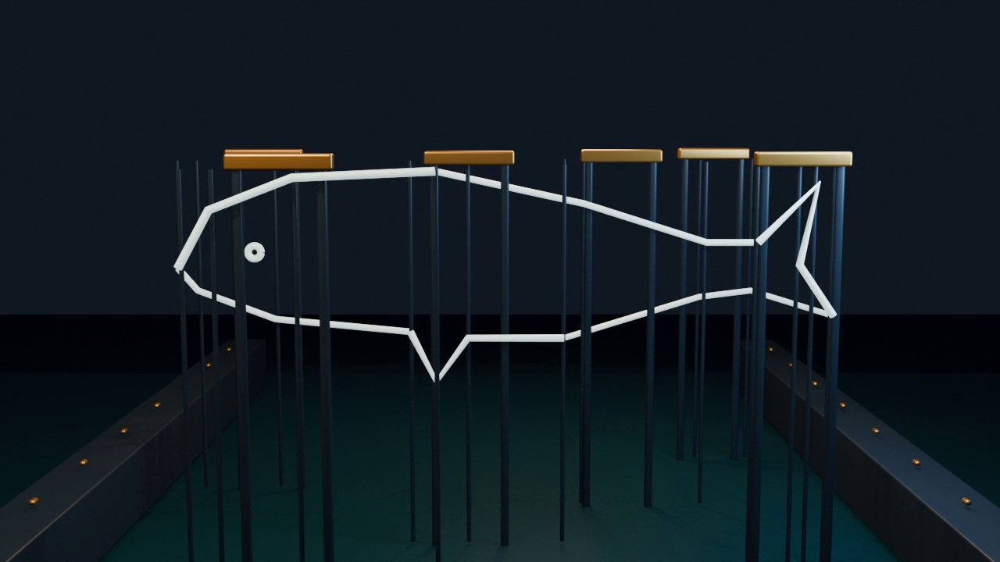
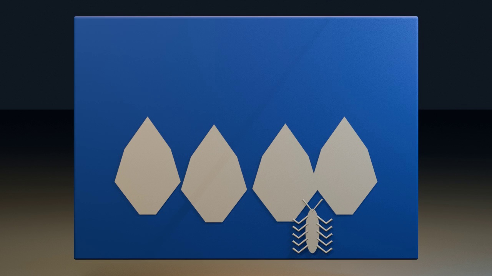
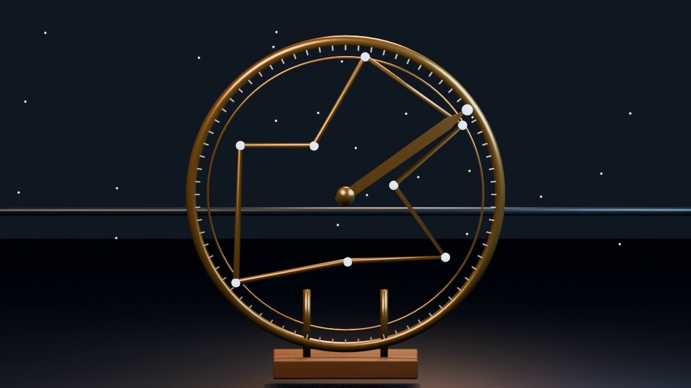
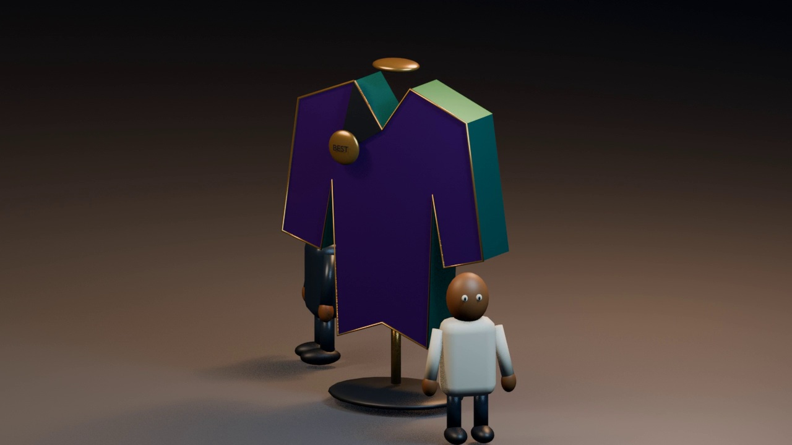
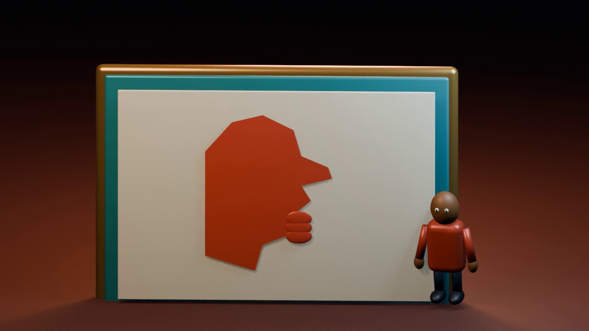
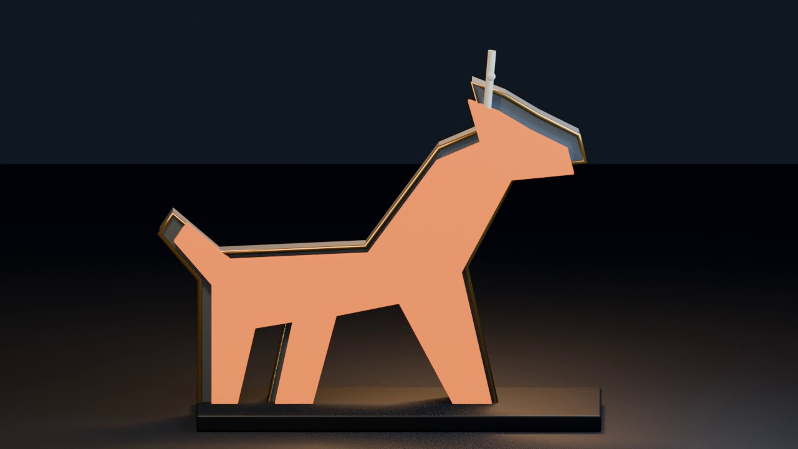
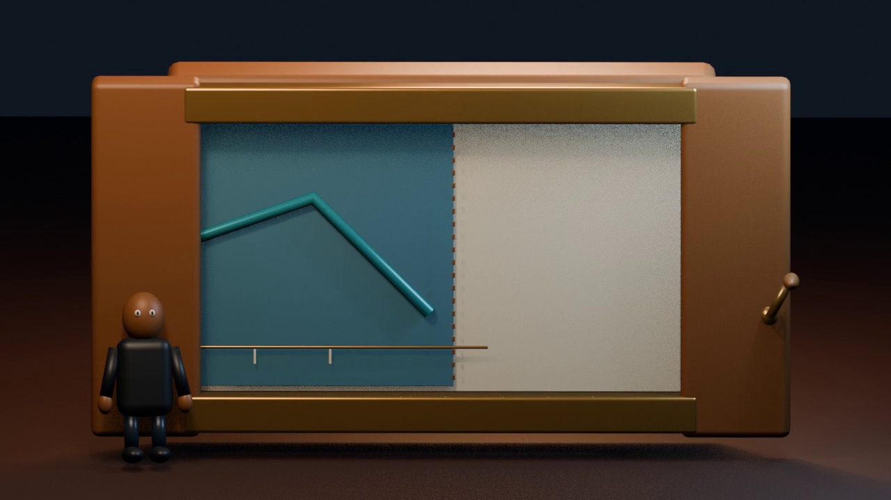
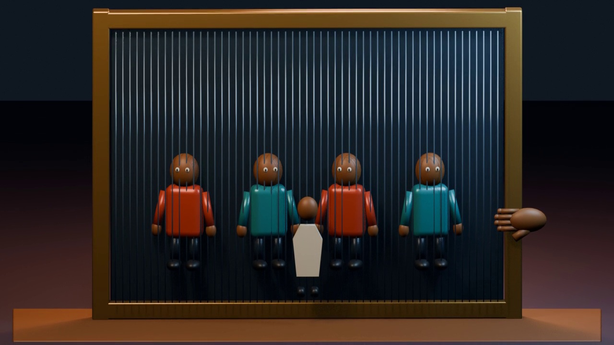
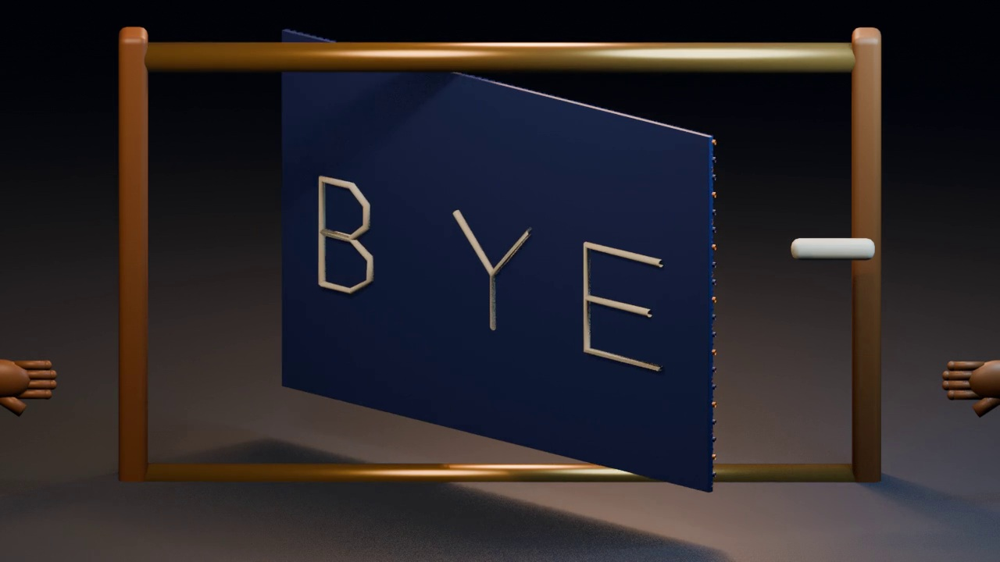
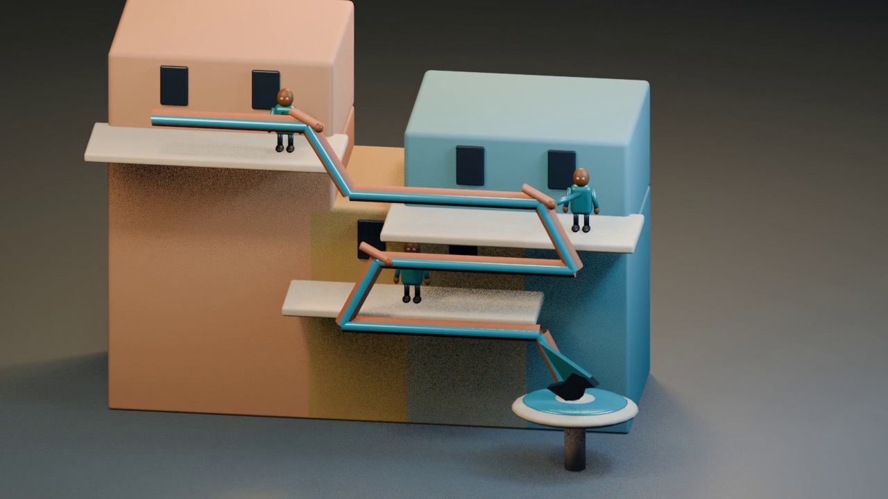

Ten fourteen-second films from the Getty AAT concept board. Each begins with editable SVG, takes form in Blender, and has original ElevenLabs music and sound.

CONCEPT 01 · anamorphoses
The Whale in Berth Six
Perspective builds a creature from industrial fragments. Vast scale and a single uncut reveal distinguish it from the intimate films.
Watch with sound
CONCEPT 03 · cyanotypes (photographic prints)
The Botanist’s Washing Line
Cyan blue, ivory botanical silhouettes and a tiny insect reveal give a graphic material transformation with a comic discovery.
Watch with sound
CONCEPT 04 · astrolabes
The Sky Has a Hinge
Pierced brass, engraved astronomical geometry and a star prediction combine precision with cosmic scale.
Watch with sound
CONCEPT 07 · iridescence
Dress Code for a Peacock
Angle-dependent emerald and violet color can produce a comic contradiction within sculptural fashion photography.
Watch with sound
CONCEPT 09 · marbling
His Excellency the Spill
Surface marbling can turn portraiture into a fluid political joke, with a printed impression as an irreversible punchline.
Watch with sound
CONCEPT 15 · lost-wax process
The Last Passage for the Bronze
An illuminated cutaway turns casting into an interior chase between molten metal and the last trapped air pocket.
Watch with sound
CONCEPT 19 · panorama boxes
The Seat Facing Backwards
A finite painted panorama can unfold into an emotionally striking absence, using warm mechanical intimacy instead of spectacle.
Watch with sound
CONCEPT 25 · lenticular photographs
The Second Tenant
A lenticular portrait can use viewpoint as a prison and a sliver of angle as an escape.
Watch with sound
CONCEPT 28 · jacquard looms
A Letter Wide Enough to Wear
A woven front and reverse can carry two different messages in one material, with the final turn revealing an intimate rebellion.
Watch with sound
CONCEPT 30 · aqueducts
Water for the Last Balcony
A downhill ribbon connects miniature architecture into a collective action, ending with the bird carrying the movement uphill.
Watch with sound